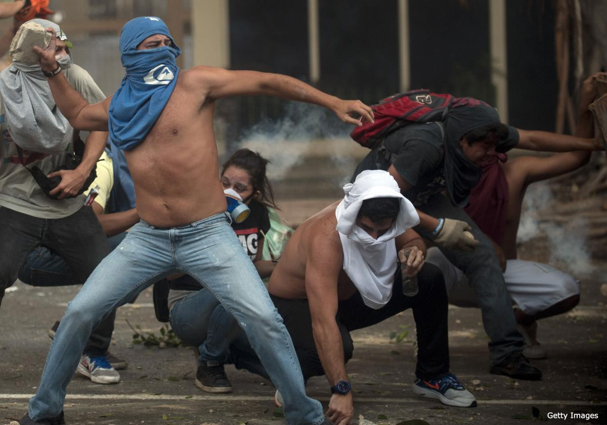

بهتیس نیکزاد
روز یکشنبه که فرا رسید، طرفداران مادورو به خیابان ها نیامدند. آنها در خانه نشستند تا در مقابل تلویزیون مشاهده کنند که آیا لوپز آنقدر شهامت دارد تا در تظاهرات حاضر شود؟ حضوری که نتیجه منطقی آن دستگیری وی بود. اما تظاهرات مخالفان از ساعت ۱۰ صبح آرام آرام آغاز می شد، هرچند که یک رو قبل تر یعنی در روز شنبه، شهردار تنها منطقه کاراکاس که طرفدار مادورو است، تظاهرات در کاراکاس و در منطقه تحت کنترل خود را غیر قانونی اعلام کرده بود. امری که البته برخلاف قوانین کشور ونزوئلا است و مخالفان هم به آن توجه نکردند.

حضور گسترده مردم که منتظر رهبرشان بودند هم چندان طولانی نشد و آقای لوپز به همراه همسر و پدرش، مارای کورینا ماچادو – نماینده مجلس از ائتلاف مخالفان - و سایر مقامات حزب خود و اعضای انتلاف واحد دموکرات، همان ساعت اولیه به میان مردم آمدند. همه هم با پیراهن سفید رنگ به نشانه صلح.
درگیری ها در ونزوئلا از سه شنبه ۱۱ فوریه با اعتراض به تورم بالا و ناامنی بصورت سازمان یافته عمدتا توسط دانشجویان آغاز شده بود. اما دولت ونزوئلا به نحو بی سابقه ای با این اعتراضات برخورد کرد. در همان روزهای اول ۳ نفر کشته شدند، چندین نفر جراحت های زیاد برداشتند و چندصد نفر هم روانه بازداشتگاه ها شدند.
در این میان اما لئوپولدو لوپز – دانش آموخته افتصاد از هاروارد و دبیرکل حزب ترقی خواه و سوسیال دموکرات Valuntad Popular به معنای اراده ملی که از احزاب ائتلاف واحد دموکراتیک و اپوزوسیون اصلی رودرروی آقای مادرورو است – با دانشجویان اعلام همبستگی کرد و با انتقاد از مادورو از او خواست به دلیل خشونت سازمان یافته در ونزوئلا، ناامنی بسیار – ونزوئلا یکی از نا امن ترین کشورهای جهان است – و تورم بسیار بالا از مقام خود استعفا دهد.
پاسخ رئیس جمهور ونزوئلا اما ساده بود. او از طریق یکی از دادگاه های ونزوئلا حکم بازداشت لئوپولدو لوپز را صادر کرد تا شاید بازداشت وی اعتراضات را به پایان رساند. اما لئوپولدو لوپز مخفی شد و با انتشار کلیپ اول خود در یوتیوپ، آشکارا به مادورو تاخت و از طرفدارانش خواست که در روز یکشنبه ۱۶فوریه به خیابان ها بیایند. او به رئیس جمهور اعلام کرد که رهبری این معترضین خیابانی را قبول کرده است. او همچنین ادعاهای رئیس مجلس – دیوسدادو کابجو – را در فرار و پناهندگی به کلمبیا تکذیب کرد و او را دروغگو خواند. در عین حال هم گفت که اگر قصد دستگیری وی را دارند بدانند که در روز یک شنبه به همراه طرفدارانش به خیابان خواهد آمد.
لئوپولدو لوپز در خیابان برای هوادارانش صحبت کرد و بر لزوم مبارزات هماهنگ تا رسیدن به نتیجه تاکید نمود. سپس به وزارت امنیت داخلی رفت و دلایل خود را در رد ادعاهای رئیس جمهور و تلاش برای کودتا توسط حزب خود در کشوری که ارتش و نیروهای نظامی آنها سراسر طرفدار مادورو هستند ارائه کرد. در واقع دلیل اصلی مخالفان هم این است که در شرایطی که ارتش و نیروهای نظامی و امنیتی ونزوئلا همگی طرفداران مادورو هستند و طرفداران اصلا مسلح نیستند چگونه ممکن است رئیس جمهور آنها را به کودتا متهم کند؟
آقای لوپز از وزارت امنیت داخلی دوباره به میان مردم بازگشت و پس از مدتی هم توسط نیروهای نظامی دستگیر شد و توسط یک نفربر ارتش به کاخ دادگستری و ازآنجا به زندان منتقل گردید. در شب روز تظاهرات هم ویدئویی از لئوپولدو لوپز در یوتویپ قرارگرفت که در آن وی به همراه همسر خود اعلام کردبود که اگر دستگیری اش به بیداری مردم بیانجامد ترجیح می دهد که به زندان برود. او در عین حال مردم را مخاطب خود قرار داد و با یادآوری شرایط اقتصادی کشور گفت که این وضعیت باید تغییر کند و اعتراضات آنها باید از حالت بالقوه خارج شود و باید در خیابان نمود پیدا نماید.
انتشار این ویدئو و همچنین انتشار خبر کشته شدن یک دختر شایسته دیگر ونزوئلایی باعث شد که مردم رادیکال تر از گذشته به خیابان ها بیایند. به خصوص اینکه مصاحبه CNN با مادر این دختر به تحریک احساسات مردم هم منجر شده بود. این مادر در حالی که بغض کرده بود و گریه می کرد، با صدای حزن آلودی می گفت آقای رئیس جمهور دختر من نه فاشیست بود و نه مزدور. فقط یک ونزوئلایی بود و برای اولین بار اعتراض کردن را می آموخت که کشته شد.
نیکولاس مادورو سندیکالیست سابق و دوست و همراه چاوز در زمان رئیس جمهور پیشین، وزیر امورخارجه و معاون وی بود. چاوز در آخرین صحبت تلویزیونی خود که پیش از ترک ونزوئلا برای درمان به کوبا، از تلویزیون سراسری پخش شد مادورا را جانشین خود نامید و به طرفداران خود توصیه کرد که در صورت مرگ وی به مادورا رای دهند. مادورا پس از مرگ چاوز به عنوان کاندیدای حزب حاکم معرفی و در انتخابات آوریل گذشته با اختلاف بسیار اندکی برنده شد و رسما ریاست جمهوری ونزوئلا را بر عهده گرفت. اما او بسیار زودتر از آنچه که تصور می کرد با انبوهی از مشکلات اقتصادی و اجتماعی رو در رو شد.
ونزوئلا کشوری با منابع طبیعی زیاد و بازار بسیار جذاب توریستی است. اما این کشور با تورم بالای پنجاه درصد، عملا در زمینه اقتصادی ورشکسته است و به دلیل کمبود دلار در بازار مالی کشور و سطح تولید روبه کاهش آن، دیگر نمی تواند پاسخگوی طبقات متوسط تحصیل کرده و حتی اقشار ضعیف و فقیر جامعه باشد.
کمبود شدید مایحتاج زندگی و ناامنی بسیار بالا در کنار عدم همکاری شرکت های بزرگ تامین مایحتاج خصوصی با دولت، کشور را عملا در وضعیت بسیار حساسی از تاریخ خود قرارداده است.
در کنار همه این موارد، وجود رگه هایی از دیکتاتوری در کشور که به نحوی همیشه ریاست جمهوری و هیئت حاکم مخالفان را کثیف و فاشیست و همکار امپریالیسم و آمریکایی می خوانند، همه و همه عملا برپایی یک دیالوگ مناسب با مخالفان در جهت بازگشت آرامش به کشور را بسیار مشکل کرده است.
درگیری های بسیار و گاه گاهی هم زد و خوردهای فیزیکی در مجلس این کشور در چند ماهه گدشته و بنا بر نظر مخالفان، سهمیه ای شدن هیئت حاکمه مابین مادورو – دیوسداد و کابجو – رئیس مجلس – و داماد هوگو چاوز – معاون اول رئیس جمهور – همه و همه به آتش این اختلافات افزوده است به نحوی که هر حرکتی از هیئت حاکم توسط مخالفین محکوم می شود و برعکس هر اعتراضی در کشور توسط مخالفان از منظر هیات حاکم به تلاشی برای کودتا در کشور تعبیر می گردد.
آسیب پذیری حکومت آقای مادورو البته معلول عوامل زیر هم هست:
پیروزی خفیف آقای مادورو در انتخابات ریاست جمهوری آوریل گدشته به نحوی که اختلاف نیکولاس مادورو و هنریکه کاپریلس رادونسکی – رهبر مخالفان – کمی بیشتر از تنها یک درصد یا ۲۲۰ هزار رای بود (۶۱, ۵۰ به ۱۲, ۴۹). به همین علت آقای مادورو همیشه سایه آقای رادونسکی و مخالفان را بسان یک اپوزوسیون بسیار قدرتمند به دنبال خود احساس می کند.
انتخابات شهرداری های ونزوئلا در دسامبر ۲۰۰۳ ضربه دیگری بر دولت آقای مادورو بود. هرچند حزب سوسیالیست آقای مادورو تقریباً هفتاد درصد شهرداری ها را به دست گرفت اما در اکثر شهر های بزرگ و پرجمعیت و تعیین کننده شکست خورد. در کاراکاس بزرگ با پنج شهرداری و یک فرمانداری، حزب آقای مادورو تنها برنده یک منطقه شهرداری شد و مابقی را به اپوزوسیون نیرومند خود – ائتلاف متحد دموکراتیک – واگذار کرد. ضمنا در شهر های بزرگ و تعیین کننده ای چون شهرداری مرکزی بارکیسیمتو , ماراکایبو , سن کریستوبال، والنسیا و ماتورین، این مخالفان بودند که پیروز شدند.
در رقابت برای فرمانداری کاراکاس، آنتونیو لدژما از اپوزسیون ائتلاف متحد دموکراتیک و آقای انریکه ویجگاس – وزیر سابق ارتباطات – از حزب آقای مادورو کاندیدا شدند که آقای آنتونیو لدژما برنده شد. پاسخ آقای مادورو اما نامناسب بود. او نامزد شکست خورده – انریکه ویجگاس – را به عنوان وزیر یک وزارتخانه تازه تاسیس به نام وزارتخانه توسعه کاراکاس انتخاب کرد تا ناظر بر عملکرد فرماندار باشد که در انتخابات بر وی پیروز شده بود.
آقای مادورو هیچگاه همانند یک رئیس جمهور که به دنبال آشتی ملی است رفتار نکرده است. رقبای او نوکران امپریالیسم و یانکی و غیره نامیده شده اند که راه را برای مذاکره عملا مسدود می کند. او هرچند می گوید اپوزوسیون باید به مذاکرات صلح و آرامش بازگردد، اما در عین حال همچنان آنان را کودتاچی و امپریالیست می نامد .
قتل دختر شایسته ۲۰۰۴ ونزوئلا در اتوبان بین شهری به همراه همسر ایرلندی خود و زخمی شدن فرزند خردسال آنها وشدت گرفتن آمار جرم و جنایت در طی ماه های اخیر اعتراضات به عدم کارایی دولت برای ایجاد امنیت داخلی را نیز افزایش داده است که این امر هم نفش بسیار تعیین کننده ای در ایجاد اعتراضات هماهنگ یک هفته اخیر داشته است. هرچند اعتراضات در ونزوئلا در سطج های کوچک و در دانشگاه ها مدت ها قبل از این در جریان بوده است
تورم بالای ۵۰ % و نایابی مواد غذایی و مایحتاج زندگی مردم در شهر های مختلف مانند دستمال توالت، آرد، برنج، شکر و غیره، فشار ها را بر دولت ونزوئلا بیشتر کرده است.
کمبود کاغذ برای روزنامه های ونزوئلا شروع اعتراضات روزنامه ها در ونزوئلا را به همراه داشت بویژه که در بسیاری موارد دیده می شود ظاهرا روزنامه های دولت مشکلی برای تامین کاعذ ندارند.
به این مشکلات البته مشکل تامین انرژی در ونزوئلا و ناتوانی دولت در رفع آن بویژه مشکلات در آب و برق و همچنین عدم موفقیت در راضی نگه داشتن برخی طرفداران چاوز که امروز چاویست هستند اما طرفدار مادورو نیستند نیز اضافه می شود.
به تمام این دلایل است که به نظر می رسد اعتراضات هر روز بیشتر از گذشته خواهد شد و پایان آن آسان نخواهد بود. به خصوص آنکه کشته شدن شهروندان ونزوئلایی حشم مردم را هم بیشتر کرده است. در شهرهای مهم بارکیسیومتو، سن کریستبال، ماراکایبو، والنسیا، ماراکای، کاراکاس، ماتورین و پورتو ارداس تا کنون برابر اعلام رسمی ۸ کشته و بیش از ۲۰۰ زخمی و چندصد بازداشتی گزارش شده است.
برای مثال زمانی که ارتش و وزارت امنیت داخلی می خواستند شهر سن کریستبال در ایالت تاچیرا را آرام کنند و نیروههای بسیاری را به آن منطقه اعزام کردند با واکنش مردم روبرو شدند که با حمله به یک نفربرارتش آن را تصاحب کردند. به همین دلایل هم هست که ارتش و نیروهای نظامی تاکنونی موفقیت چندانی در کنترل اعتراضات نداشته اند.
اعتراضات بویژه اعتراضات شبانه و بستن سریع خیابان ها که به شیوه اعتراضات سریع آرژانتینی است – یک نفر آشغال های سطل زباله را سریعا در وسط خیابان می ریزد و نفر دیگر آن را آتش می زند و خیابان را به این صورت مسدود می کنند و سپس ناپدید شده به محله دیگر می روند – نیروهای نظامی را هم خسته و سردرگم کرده است؛ به ویژه که شبها افرادی که توانائی رفتن و شرکت در تظاهرات را ندارند بر روی تراس خانه ها با سوت و شیپور و زدن قاشق بر روی دیگ ها سرو صدا ایجاد می کنند تا به معترضان خیابانی روحیه دهند.
با این وجود و در شرایطی که اعتراضات هر روز رادیکال تر از گذشته می شود، آقای مادرور همچنان به دنبال دشمن خارجی و داخلی است به نحوی که یکبار انگشت اتهام را به کلمبیا نشانه می رود و سپس آمریکا را به تلاش برای دخالت در اوضاع داخلی کشورش متهم می کند و سه تن از اعضای سفارت آمریکا را به دلیل ارتباط با دانشجویان به بهانه ویزای دانشجویی اخراج می کند. او در عین حال به رسانه های بین المللی مانند CNN, NBC, FOX و ... حمله می کند و آن ها را به قطع برنامه هایشان از ونزوئلا تهدید می نماید.
مادورو همچنان مخالفان را مزدوران امپریالیسم و کودتاچی و فاشیست می نامد. اما از سوی دیگر از آنها دعوت می کند تا در جلسه آشتی ملی و مذاکره برای صلح شرکت کنند. و این کار مخالفان را خشمگین تر هم می کند. هنریکه کاپریلس رادونسکی، نامزد پیشین مخالفان در انتخابات ریاست جمهوری، در روز پنج شنبه ۲۰ فوریه دعوت آقای مادورو برای گفتگوهای صلح را رد کرد و گفت می خواهید ما را به گفتگو ببرید در حالی تفنگ روی سر ما گذاشته اید. او همچنین به دولت گفت که دلیل ندارد با او گفت و گو کنند. چون سخن اصلی باید خطاب به مردم بیان شود.